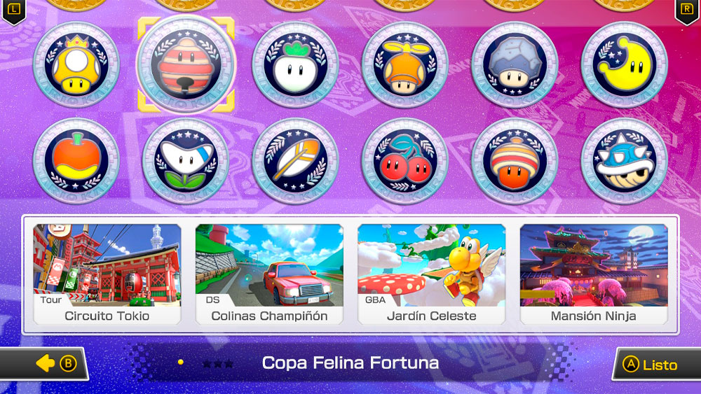
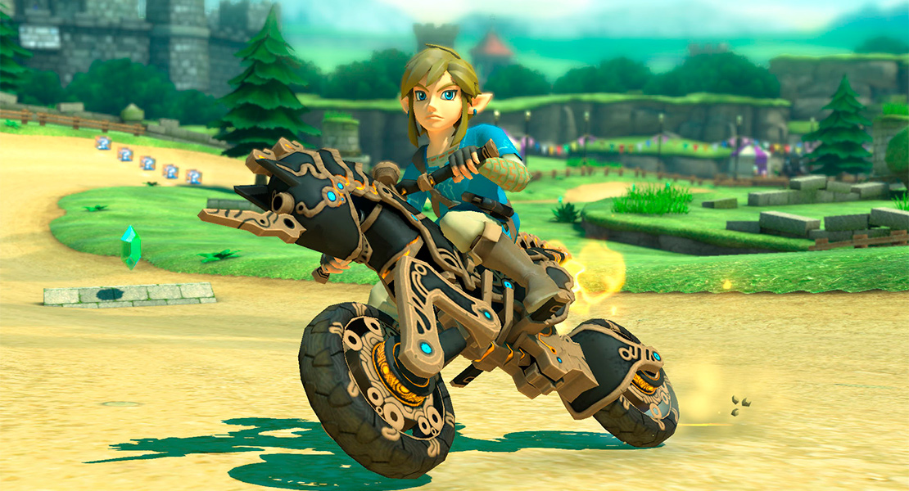

← Volver
El juego de Mario Kart con más personajes
El juego Mario Kart 8 Deluxe tiene 42 personajes para escoger,
¡La lista de personajes más grande en la historia de la serie!
Montones de circuitos
Compite por la copa en 48 circuitos

Incluye algunos inspirados en la serie The Legend of Zelda™
